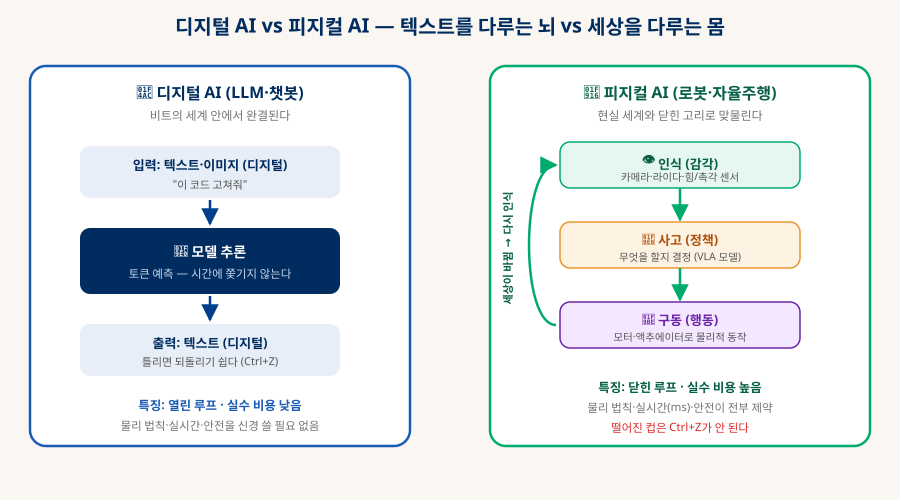
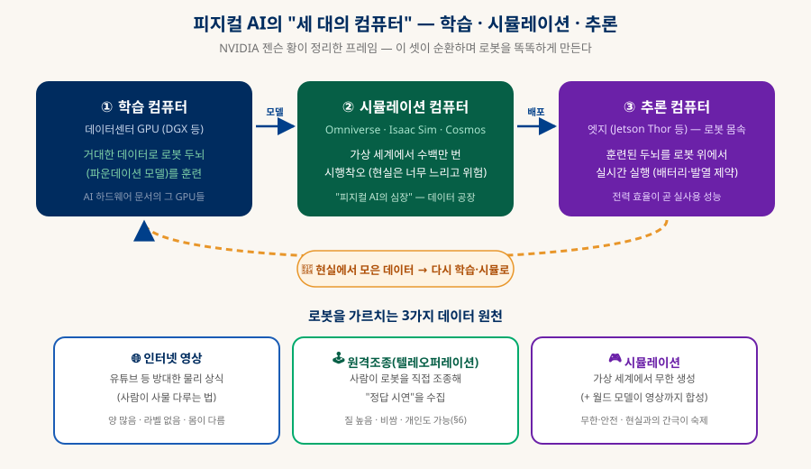
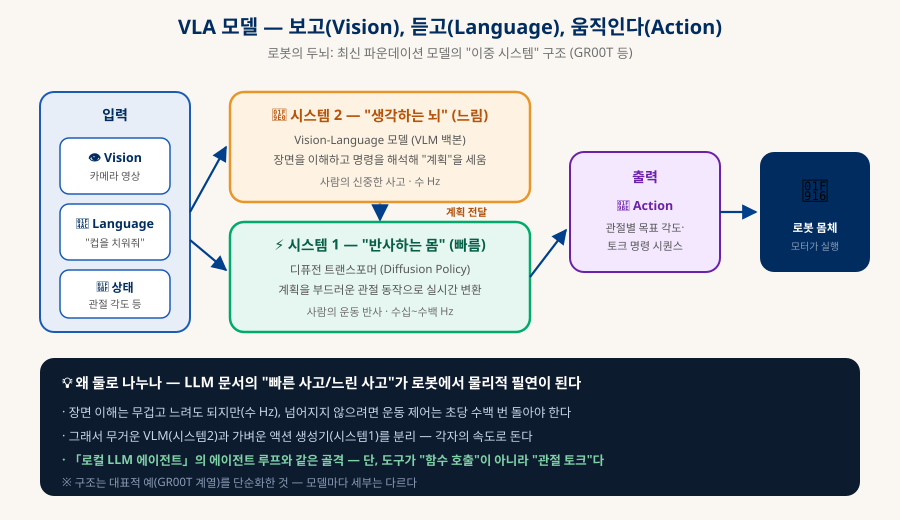
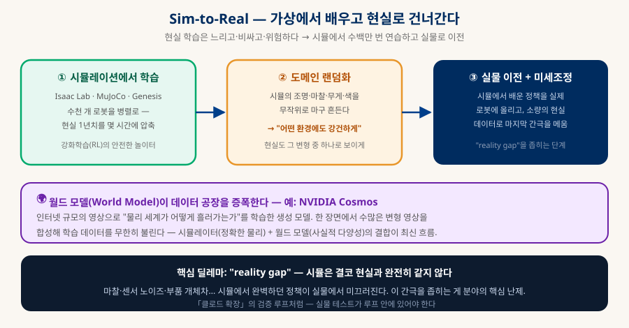
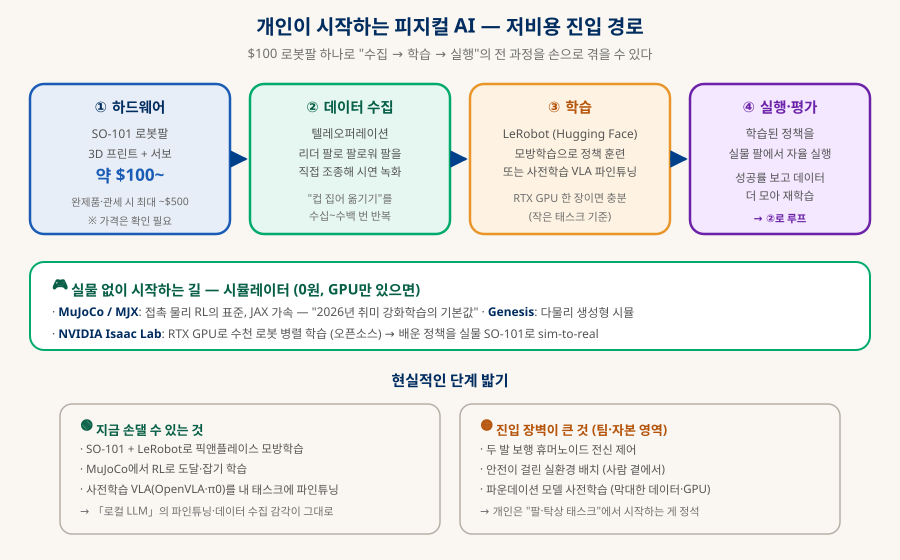

피지컬 AI
몸을 얻은 지능 — 로봇 · 자율주행 · 세상과의 닫힌 고리
디지털 AI가 텍스트를 다룬다면, 피지컬 AI는 세상을 다룬다 — 카메라로 보고, 판단하고, 모터로 움직인다. 무엇이고, 2026년 현재 어디까지 왔으며(휴머노이드·VLA·월드 모델), 개인이 $100 로봇팔로 어떻게 시작할 수 있는지까지 — 최신 지형을 검색으로 확인해 한 문서로 정리한다.
0. 한눈에 보기 — 지능이 몸을 얻는다
지금까지의 AI가 "말하는 뇌"였다면, 피지컬 AI는 "움직이는 몸"이다
피지컬 AI(Physical AI)는 물리 세계를 인식·판단·행동하는 AI다 — 카메라·센서로 주변을 보고, 무엇을 할지 결정하고, 모터·액추에이터로 실제 동작을 일으킨다. 로봇팔·휴머노이드·자율주행차가 전부 여기에 속한다. 지금까지 이 지식 베이스가 다룬 AI(LLM·에이전트)는 전부 비트의 세계 안에서 완결됐다 — 텍스트를 받아 텍스트를 냈다. 피지컬 AI는 그 경계를 넘어 물리 법칙·실시간·안전이 지배하는 세계로 나온다. 틀린 문장은 지우면 그만이지만, 떨어뜨린 컵은 되돌릴 수 없다는 것 — 이 한 문장이 모든 차이의 근원이다.
학습·시뮬·추론(§2)
Vision-Language-Action
SO-101 로봇팔(§5)
넘어온 해
1. 정의 — 세상과 맞물린 닫힌 고리
디지털 AI의 "열린 루프" vs 피지컬 AI의 "닫힌 루프"
둘의 근본 차이는 루프가 닫혀 있느냐다. LLM은 입력을 받아 출력을 내면 끝난다(열린 루프). 피지컬 AI는 인식 → 사고 → 행동이 한 바퀴 돌 때마다 세상이 실제로 바뀌고, 그 바뀐 세상을 다시 인식하는 무한 순환이다(닫힌 루프). 그래서 매 순간 예측이 빗나갈 수 있고, 되돌릴 수 없다.

| 축 | 디지털 AI (LLM) | 피지컬 AI (로봇) |
|---|---|---|
| 다루는 것 | 비트 (텍스트·이미지) | 물질 (힘·마찰·무게·시간) |
| 루프 | 열림 — 출력하면 끝 | 닫힘 — 행동이 세상을 바꾸고 되먹임 |
| 실수 비용 | 낮음 (Ctrl+Z) | 높음 — 깨진 것은 복구 불가, 사람이 다칠 수 있음 |
| 시간 제약 | 느슨 (몇 초 걸려도 됨) | 엄격 — 균형·충돌 회피는 초당 수백 번 제어 |
| 데이터 | 인터넷에 넘침 (텍스트) | 희소 — "로봇이 물건 집는" 데이터는 직접 모아야 |
| 핵심 난제 | 환각·정렬 | 인식 불확실성 · 실시간 제어 · sim-to-real 간극 |
2. 세 대의 컴퓨터 — 로봇 하나를 똑똑하게 만드는 인프라
학습 · 시뮬레이션 · 추론이 순환한다
로봇 한 대가 일을 하려면 사실 세 종류의 컴퓨터가 협업해야 한다 — 이것이 NVIDIA가 정리해 널리 퍼진 프레임이다. 학습(데이터센터 GPU에서 두뇌를 훈련), 시뮬레이션(가상 세계에서 안전하게 수백만 번 연습), 추론(로봇 몸속 엣지 칩에서 실시간 실행). 이 셋이 데이터를 주고받으며 순환한다.

여기서 가장 중요한 통찰은 데이터가 병목이라는 점이다. LLM은 인터넷의 텍스트를 먹고 자랐지만, "로봇이 서랍을 여는" 데이터는 인터넷에 없다. 그래서 세 원천으로 데이터를 만든다 — 인터넷 영상(사람이 사물 다루는 물리 상식, 양은 많으나 라벨 없음), 텔레오퍼레이션(사람이 로봇을 직접 조종한 정답 시연, 질은 높으나 비쌈 — 개인도 가능, §5), 시뮬레이션(무한·안전하지만 현실과의 간극이 숙제). 이 데이터 문제가 §3의 기술들을 낳았다.
3. 핵심 기술 — 로봇의 두뇌와 훈련장
VLA 모델(두뇌), 그리고 sim-to-real·월드 모델(훈련장)
AVLA 모델 — 보고, 듣고, 움직이는 하나의 두뇌
최근 피지컬 AI의 심장은 VLA(Vision-Language-Action) 모델이다. 이름 그대로 카메라 영상(Vision)과 자연어 명령(Language)을 받아 로봇 동작(Action)을 직접 출력한다. "저 컵을 싱크대에 넣어줘"라고 말하면, 장면을 이해하고 관절 움직임 시퀀스를 생성한다. LLM 문서에서 본 트랜스포머가 로봇 제어로 확장된 것으로, 흔히 이중 시스템 구조를 쓴다.

왜 둘로 나눌까? 장면 이해는 무겁고 느려도 되지만, 넘어지지 않으려면 운동 제어는 초당 수백 번 돌아야 하기 때문이다. 그래서 무거운 시스템 2(VLM 백본 — 무엇을 할지 계획, 수 Hz)와 가벼운 시스템 1 (디퓨전 트랜스포머 — 계획을 부드러운 관절 동작으로 변환, 수십~수백 Hz)을 분리한다. 이는 심리학의 "빠른 사고/느린 사고"가 로봇에서 물리적 필연이 된 사례다 — 「로컬 LLM 에이전트」의 에이전트 루프와 골격은 같되, 도구가 "함수 호출"이 아니라 "관절 토크"인 셈이다.
BSim-to-Real과 월드 모델 — 데이터 부족을 푸는 법
데이터 병목(§2)의 핵심 해법이 시뮬레이션 학습(sim-to-real)이다. 현실에서 로봇을 학습시키면 느리고·비싸고·위험하다(넘어지면 부서진다). 그래서 가상 세계에서 수천 대를 병렬로 돌려 현실 1년치를 몇 시간에 압축하고, 배운 정책을 실물로 옮긴다.

시뮬은 결코 현실과 완전히 같지 않다 — 이 "reality gap"이 분야의 핵심 난제다. 두 무기로 좁힌다: 도메인 랜덤화(시뮬의 조명·마찰·무게를 마구 흔들어 "어떤 환경에도 강건하게" 만들고, 현실도 그 변형 중 하나로 보이게), 그리고 월드 모델(예: NVIDIA Cosmos) — 인터넷 규모 영상으로 "물리 세계가 어떻게 흘러가는가"를 학습한 생성 모델로, 한 장면에서 사실적 변형 영상을 무한히 합성해 학습 데이터를 불린다. 시뮬레이터(정확한 물리) + 월드 모델(사실적 다양성)의 결합이 2026년의 최신 흐름이다.
4. 2026 현재 지형 — 데모에서 공장으로
2026년은 휴머노이드가 무대 데모를 넘어 실제 공장에 배치되기 시작한 해다
A휴머노이드 플레이어 — 자동차 공장이 앵커 고객
| 플레이어 | 최신 모델 | 2026년 단계 (조사 시점 · 확인 필요) |
|---|---|---|
| Figure | Figure 03 | 상업 계약 단계. BMW 공장 파일럿(02→03 전환) 후 초기 물량 배치. 물류·시퀀싱 작업. |
| Tesla Optimus | Gen 3 | 양산 직전. Fremont 저물량 생산 목표이나 세부는 미공개/불확실. 소비자 판매는 2027년 이후 목표. |
| Boston Dynamics | 전동화 Atlas | 양산 시작. 유압 제거·전관절 전동화. 2026년 물량은 Hyundai·Google DeepMind에 선주문. |
| Unitree | G1 / H1 | 양산·저가 선도(G1 ~$16K대부터, 확인 필요). 출하량 급증, IPO 추진 보도. |
| Agility Robotics | Digit | 상업 배치 실적 최다급(물류 창고). 토트 이동 등 반복 작업. |
| 1X | NEO | 가정용 예약 시작 — 소비자 시장 진입 시도. 원격 전문가(teleop) 학습 기반. |
| Apptronik | Apollo | Mercedes-Benz 파일럿, Google DeepMind AI 협업. 대규모 투자 유치. |
핵심 흐름 두 가지: ① 자동차 제조사가 앵커 고객이다(BMW·Mercedes·Hyundai·Tesla) — 구조화된 공장 환경이 첫 실전 무대이기 때문. ② 가정용 진입이 1X NEO 등으로 막 시작됐지만, 집은 공장보다 훨씬 무질서해 난이도가 다른 리그다.
B파운데이션 모델 — 로봇계의 "GPT 순간"?
| 모델 | 주체 | 성격 (조사 시점) |
|---|---|---|
| RT-2 | Google DeepMind | 웹 지식을 로봇 제어로 전이한 초기 대표 VLA (2023). |
| OpenVLA | 오픈소스 (학계) | 7B 오픈소스 VLA — 오픈 VLA 연구의 기준점. 개인 파인튜닝 가능. |
| Gemini Robotics | Google DeepMind | Gemini 기반 VLA + 공간추론 모델(ER). 온디바이스·소량 데모 파인튜닝 지원. |
| π0 / π-계열 | Physical Intelligence | 제너럴리스트 정책. openpi 오픈소스 공개. 후속 버전은 명칭·시기 불확실. |
| Isaac GR00T | NVIDIA | "오픈 휴머노이드 파운데이션 모델". N1 → N1.x로 업데이트, 상업 라이선스. 이중 시스템(§3-A) 구조. |
5. 내가 개발하는 법 — $100 로봇팔에서 시작
휴머노이드는 팀·자본의 영역이지만, "팔로 물건 집기"는 지금 개인이 손댈 수 있다
좋은 소식: 피지컬 AI의 전 과정(데이터 수집 → 학습 → 실행 → 재학습)을 탁상 로봇팔 하나로 직접 겪을 수 있다. 핵심은 Hugging Face의 오픈소스 스택 LeRobot과 3D 프린트 로봇팔 SO-101(부품 기준 약 $100~, 가격 확인 필요)이다.

| 단계 | 도구 | 하는 일 |
|---|---|---|
| ① 하드웨어 | SO-101 로봇팔 | 3D 프린트 부품 + 서보모터로 조립. "리더 팔"(조종용)과 "팔로워 팔"(작동용) 한 쌍. |
| ② 데이터 수집 | 텔레오퍼레이션 | 리더 팔을 손으로 움직이면 팔로워가 따라 하고, 그 시연을 카메라와 함께 녹화 — "정답 데이터"를 수십~수백 번 모은다. |
| ③ 학습 | LeRobot (Python) | 모은 시연으로 모방학습(imitation learning) 정책을 훈련. 또는 사전학습 VLA(OpenVLA 등)를 내 태스크에 파인튜닝. RTX GPU 한 장이면 충분. |
| ④ 실행·평가 | 학습된 정책 | 실물 팔에서 자율 실행 → 성공률 확인 → 실패 사례를 더 모아 재학습. 루프가 돈다. |
| (대안) 시뮬 | MuJoCo·MJX / Isaac Lab | 실물 없이 시작. MuJoCo(+JAX 가속 MJX)는 접촉 물리 RL의 표준. Isaac Lab은 RTX GPU로 수천 로봇 병렬 학습(오픈소스) → sim-to-real. |
6. 난제와 전망 — 왜 아직 우리 집엔 로봇이 없나
기술은 빠르게 오지만, 물리 세계는 관대하지 않다
🌉 Reality Gap
시뮬에서 완벽하던 정책이 실물에서 미끄러진다 — 마찰·센서 노이즈·부품 개체차 때문. 도메인 랜덤화·월드 모델로 좁히지만 완전히 닫히진 않는다(§3-B).
📉 데이터 희소성
"로봇이 물건 다루는" 데이터는 인터넷에 없다. 텔레오퍼레이션은 비싸고, 시뮬은 간극이 있다. 데이터를 어떻게 싸게 많이 모으냐가 승부처다.
✋ 손의 정교함
걷기는 꽤 풀렸지만 정교한 손 조작(dexterity)은 여전히 어렵다 — 부드러운 물체, 미끄러운 것, 힘 조절이 필요한 작업에서 인간과 격차가 크다.
🔋 엣지 제약
로봇 몸속 칩은 배터리·발열의 한계 안에서 거대 모델을 실시간으로 돌려야 한다. 온디바이스 경량화가 핵심 과제 — 「AI 하드웨어」의 전력 효율 이야기.
🛡 안전과 신뢰
사람 곁에서 무거운 기계가 움직인다. 한 번의 오작동이 사고다. 「클로드 확장」의 "훅으로 원천 차단" 같은 안전 게이트가 물리적으로 필요하다.
💰 비용과 신뢰성
24시간 고장 없이 일해야 경제성이 나온다. 데모 한 번은 쉬워도, 수천 시간 반복 신뢰성은 다른 문제 — 이게 "공장부터"인 이유.
7. 출처
2026년 7월 조사 시점 기준 — 빠르게 변하는 분야이므로 최신 상태는 각 1차 출처로 재확인 권장
- NVIDIA Newsroom — Physical AI / Isaac GR00T · Cosmos 발표 GR00T 파운데이션 모델, Cosmos 월드 모델, Jetson Thor 등 NVIDIA 스택 1차 출처
- LeRobot — Hugging Face 오픈소스 로봇 학습 라이브러리 (GitHub) §5 개인 개발 스택의 핵심. SO-100/101 지원·모방학습·RL 도구
- Hackster — SO-101 저가 3D 프린트 로봇팔 출시 부품 ~$100 진입 장벽. 가격·구성은 판매처마다 다름(확인 필요)
- OpenVLA — 오픈소스 VLA 모델 §3-A·§4-B. 개인 파인튜닝 가능한 7B VLA 연구 기준점
- Google DeepMind — Gemini Robotics (VLA · On-Device) 온디바이스 실행·소량 데모 파인튜닝 트렌드
- Google DeepMind — Genie 3 (월드 모델) §3-B. 실시간 탐색 가능한 생성형 3D 세계
- MuJoCo — 물리 시뮬레이터 (DeepMind, 오픈소스) §5 시뮬 경로. 접촉 물리 RL 표준, JAX 가속(MJX)
- Axios — NVIDIA CES 2026: "피지컬 AI의 ChatGPT 순간" §0. "Physical AI" 용어의 젠슨 황 프레이밍 맥락
- The Robot Report — 휴머노이드 공장 배치 동향 (Figure·BMW 등) §4-A. 2026 휴머노이드 상업 배치 보도 (2차 출처 다수 — 재확인 권장)